这页只回答三个关系：真实 context 的训练频率
f、clean table 大小R，以及 replay exposureL如何对应 gap。当前可展示的 v5 结果位于页首；旧torch.compile波次完整保留在下方折叠区，只作溯源。当前口径：bf16 autocast、默认不 compile；主 gap = 同一 logged step 的
fixed val loss − current-batch train loss。除特别标注外，不把诊断 probe 或旧波次拟合升级成普适定律。
f → gapGbi∝f−0.252746 · Gtri∝f−0.318121
7 个宽几何 bin 的单 seed 诊断摘要（R²=0.997165 / 0.995548）。hit count = 同一真实 n-gram context 在训练语料中出现的次数，在 hash 前计数；它不是 table 的物理 row load，也不是碰撞后的 table hit count。
R → gapGbi(R) ∝ R0.429 · Gtri(R) ∝ R0.658
两条正式单表轴各有 18 个正终点、seed 42、step 1000；每条轴只开启被扫描的表，另一张表关闭。R² 分别为 .976/.995；两条 branch 不能合并成一个指数。
D → gap强 dilution / crossover，不是一条幂律
v5 seed 42：.25× 为 11.536，5× 为 0.084，6× 后穿过 0；局部拟合指数随窗口漂移。
L → gap12 个点；每个 run 完成 3 个 epoch
该轴用于检查 replay/exposure 的变化；当前单 seed v5 不把它写成幂律或因果律。
读图规则。 频率图的横轴是 exact context frequency；table 图的横轴是每个 clean table 的行数 R。table occupancy / collision 是解释 R 效应的另一条观测轴，不能替代 f。
主展示采用 v5 M2 的当前训练 batch频率分 bin（step 2000；每 10 步记录）。因此这里的 gap 符合当前主口径。它回答的是：在自然语料中，不同出现次数的真实 context 对应怎样的 token-level gap；不是 hash row 被写入多少次。
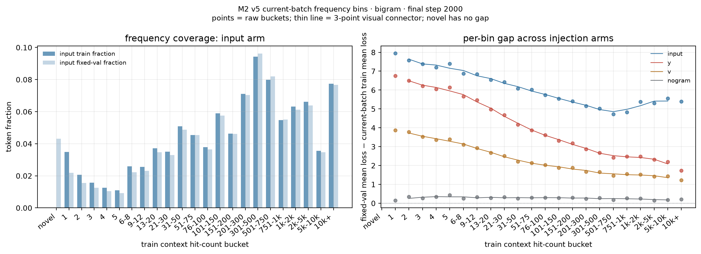
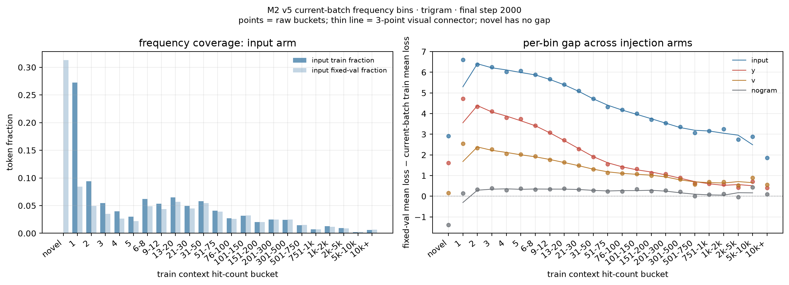
作为更细的 exact-f 形状诊断，S1 v5 把 eligible exact-f 条目按对数范围合并为 7 个宽几何 bin；每个 bin 内按 shared-context token mass 加权，高频尾部不再由少数 exact-f 点主导。seed 42、step 1000 的双对数摘要为：bigram G(f)∝f^-0.252746（R²=0.997165），trigram G(f)∝f^-0.318121（R²=0.995548）。这两个数使用 fixed train probe，且只有单 seed；它们是当前诊断图中很清楚的局部形状摘要，仍不是普适幂律指数的结论。
这里 R 是被改变的 clean 单表物理行数；另一张表在该轴中关闭。bigram-only 与 trigram-only 是两条独立的单表轴：G_bi(R) ∝ R^0.429、G_tri(R) ∝ R^0.658（各 18 个正终点，seed 42，step 1000，R² 分别为 .976/.995）。这两个描述性指数只对应当前扫描窗口，不能合并成一个双表指数；相较此前双表轴的 .041/.247，单表设计消除了固定背景 gap 的斜率稀释。

R，另一张表关闭。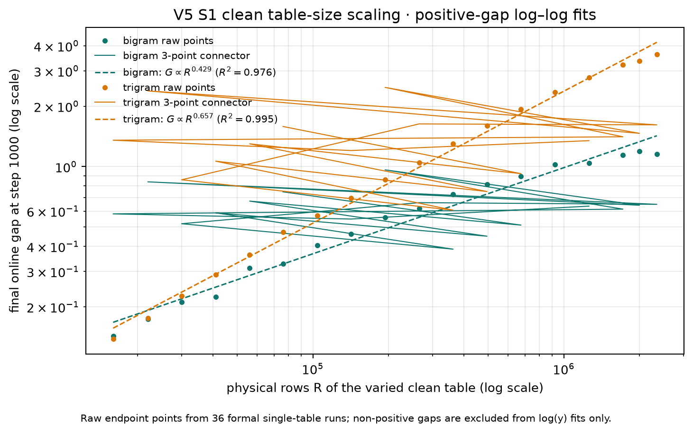
+0.429 / +0.658。
这里 D 是训练 shard dose；总训练步数固定为 2000，因此 D 越大，每个样本在该预算内被 replay 的次数越少。v5 frequency-refresh 扫描（seed 42）从 D=.25× 的 gap 11.536 下降到 D=5× 的 0.084，D=6×/8× 为 −0.088/−0.075。它是很强的剂量/重复暴露关系，但不宜命名为一条全区间 G(D)∝D^{-α}：正 gap 的 5× 以内拟合斜率为 −1.727（R²=0.887），随后 gap 过零而 log(y) 不再定义。这说明当前曲线是 crossover 到 near-zero floor，而不是常数指数。
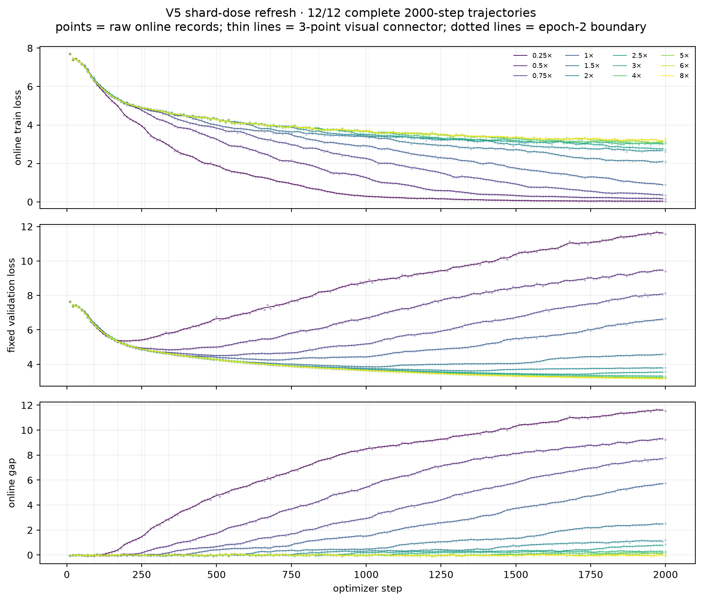
v5 的 trigram-only epoch-length 阵列只有单 seed。它用于把“频率效应”和“训练流重复暴露”并列观察；当前证据不足以写出稳定的 G(L) 幂律或独立因果关系。

L4 的 epoch-length 点，横轴直接使用 L4 倍数。
在唯一极简 setting（vanilla nanoGPT 8L·6H·768D、learned absolute position、LayerNorm、tied embedding、input/wte n-gram 注入、自然语料）下， 本附录分别检查：
L 在 fixed-step 与 fixed-epoch 两种对齐下如何影响 gap；f 与 gap 是否符合两因素形式
G(f) = A f^(-β) [1 − exp(−c f^γ)]；本报告中的历史 gap 数值来自同一 fixed train probe 和 fixed validation probe 上的
fixed_val_loss − fixed_train_loss；这些结果保留用于历史追溯，但该口径现已标记为
exposure-contaminated 诊断，不再作为主结论。三 seed 汇总部分改用旧波次产物中
train_log.jsonl 的在线训练 batch：val_loss − train_loss，但其 compute contract
仍是 bf16 + torch.compile。最新标准 gap 仍定义为在线训练 batch 与 fixed validation
的 val_loss − train_loss，并要求 bf16 不 compile。frequency 轴只做自然语料下的
observational consistency 检验，不是 f 的因果证明。除非特别注明，数值均为
对应 run 的最终 step；没有当前标准重跑时，不把旧波次结果升级为新标准下稳定
的指数或定律。
| 项 | 值 |
|---|---|
| backbone | vanilla nanoGPT，8L / 6H / 768D，learned absolute position，LayerNorm，tied embedding |
| n-gram 注入 | input / wte over-encoding |
| 模块臂 | bigram、trigram、both、nogram |
| table optimizer | RMSProp，无动量，table_betas=(0.0, 0.99) |
| table learning-rate scale | table_lr_scale=2.0，实际 table lr 为 0.008 |
| backbone optimizer | AdamW，betas (0.8, 0.95)，lr 0.004 |
| 数据 | shard 1 fixed 顺序 replay；train / val shard 完全不重叠 |
| 历史计算 | S1 261-run 波次为 bf16 autocast + torch.compile，仅作历史审计 |
| 当前计算标准 | bf16 autocast，默认不 torch.compile；当前标准 S1 scaling 结果尚未重跑 |
| 历史测量 | fixed train probe（4 batches）+ fixed validation；probe SHA256 为 38d1254a827759d6 |
| 当前主测量 | online train loss + fixed validation，即 val_loss − train_loss；fixed probe 仅诊断 |
| cadence | 当前默认主实验为每 10 步；只需曲线可用每 50 步；只需末端可用 --val_steps 1000；frequency eval 必须跟随所选测量步点 |
| 结果命名 | data/runs_scaling/<run_id>_fixed/ |
历史普通 epoch/table 网格不计算 exact-frequency，也不传 --freq_index，只保留
在线 train/val 与 online gap 指标；fixed-probe 仅作诊断；历史 frequency 轴单独使用
freq_{arm}_{fs,fe}_fixed 八个 run，并开启 exact-frequency 观测。按最新标准
重跑时，频率观测应按实验目的选择完整曲线或末端 val_steps，不能沿用旧波次
的 compile 假设。
历史 S1 波次共 seed 42：109 个 run + seed 43/44：各 76 个 run = 261 个 run：
| 网格 | seed 42 | seed 43/44 各 | run 范围 | 最终 step |
|---|---|---|---|---|
| epoch · fixed-step | 16 | 16 | ep_L{1..4}_{bigram,trigram,both,nogram}_fs[_s{43,44}]_fixed |
1000 |
| epoch · fixed-epoch | 16 | 16 | ep_L{1..4}_{bigram,trigram,both,nogram}_fe[_s{43,44}]_fixed |
L1/L2/L3/L4 = 252/504/1008/2022 |
| table size | 69 | 36 | seed 42：23 个 mult × 3 module；seed 43/44：12 个 mult（1,2,3,4,6,8,12,16,24,32,48,64）× 3 module | 1000 |
| frequency axis | 8 | 8 | freq_{bigram,trigram,both,nogram}_{fs,fe}[_s{43,44}]_fixed |
fs=1000，fe=2022 |
这 261 个历史 run 均通过当时计算契约下的统一 QC：
summary.json 存在且 run id、步数、epoch batches 与命名一致；compute_dtype=bf16、torch_compile=true、RMSProp (0.0,0.99)、
table_lr_scale=2.0。其中 torch_compile=true 是旧波次事实，不符合最新
agents.md 的默认标准；38d1254a827759d6；table_occupancy.json；当前标准下的 S1 epoch/table/frequency 重跑尚未产生可纳入本报告的结果，因此 后文所有三 seed 数字都应读作“旧计算契约下的探索性数学审计”。
独立的 bb_safety_L1_nogram_5000 不是这 109 个正式 run 的一部分：它使用
旧 cadence（50 步）和 fp32、无 compile，只作为长训 backbone gap 的量级
参考。它在 step 5000 的 fixed train / val / gap 为
0.0065 / 16.666 / +16.660。因此正式 nogram 对照不能被假设为恒等于零。
L4 按用户决策定义为 337 device batches/epoch，即 shard 1 的完整
24,264 / 72 个 batch；L1/L2/L3 为同一 shard 流的嵌套前缀
42/84/168。正式结果中的 epoch batches 为：
| L | batches/epoch | fixed-step target | fixed-epoch target |
|---|---|---|---|
| L1 | 42 | 1000 | 252 |
| L2 | 84 | 1000 | 504 |
| L3 | 168 | 1000 | 1008 |
| L4 | 337 | 1000 | 2022 |
下表来自 ep_{L}_{module}_{align}_fixed 的最终 probe 记录；每个格子的
step 分别由上表给出。
| L | bigram fs | trigram fs | both fs | nogram fs | bigram fe | trigram fe | both fe | nogram fe |
|---|---|---|---|---|---|---|---|---|
| L1 | 5.0698 | 1.4811 | 10.8446 | 0.1223 | 0.6031 | 0.4810 | 1.0079 | 0.0639 |
| L2 | 2.2394 | 1.1632 | 6.0760 | 0.0289 | 1.1779 | 0.8657 | 1.8853 | 0.0664 |
| L3 | 1.6309 | 1.5637 | 2.0769 | 0.0072 | 1.8447 | 2.2188 | 5.9113 | 0.0500 |
| L4 | 0.9406 | 0.8682 | 0.9696 | −0.0087 | 1.1759 | 6.0557 | 2.2658 | 0.1974 |
both 的 raw gap 从
ep_L1_both_fs_fixed 的 +10.8446 @ step 1000 降到
ep_L4_both_fs_fixed 的 +0.9696 @ step 1000；但 no-ngram 基线也
随 L 改变，主比较应使用图中的
ΔG = G(module) − G(no-ngram)，不能只比较 raw gap。ep_L3_both_fe_fixed 在 step 1008 为 +5.9113，而
ep_L4_trigram_fe_fixed 在 step 2022 为 +6.0557。图：
figs/epoch_gap_by_alignment.png：16 个 epoch run 的历史 fixed-probe gap；figs/epoch_deltaG_fs.png：fixed-step 下相对各 L no-ngram 的 ΔG；figs/epoch_final_gap.csv：逐 run 最终 gap 表。所有 table run 固定 L4（337 batches/epoch）、1000 steps、seed 42，唯一变化
是 table_mult。共 23 个实测规模；bigram/trigram/both 各 23 点。原始 7
个规模的 21 个 run 使用 dense monitor（每 10 步），其余 48 个加密 run 使用
sparse monitor（只在最终步 1000 记录 gap）。每个 n-gram、每层、两组 hash
的 logical addresses 为
2R = 16,384 × table_mult。
table_mult |
logical 2R |
bigram online gap | trigram online gap | both online gap |
|---|---|---|---|---|
| 1 | 16,384 | 0.0914 | 0.0686 | 0.0983 |
| 2 | 32,768 | 0.1021 | 0.0636 | 0.1319 |
| 3 | 49,152 | 0.1145 | 0.1419 | 0.2157 |
| 4 | 65,536 | 0.1527 | 0.1717 | 0.2163 |
| 5 | 81,920 | 0.1550 | 0.1517 | 0.2552 |
| 6 | 98,304 | 0.2342 | 0.1699 | 0.3142 |
| 7 | 114,688 | 0.1764 | 0.1700 | 0.3592 |
| 8 | 131,072 | 0.1958 | 0.2722 | 0.3225 |
| 9 | 147,456 | 0.2163 | 0.2958 | 0.2887 |
| 10 | 163,840 | 0.2086 | 0.3351 | 0.3238 |
| 12 | 196,608 | 0.2223 | 0.2897 | 0.4594 |
| 14 | 229,376 | 0.2776 | 0.3294 | 0.4324 |
| 16 | 262,144 | 0.2663 | 0.3569 | 0.5429 |
| 18 | 294,912 | 0.2591 | 0.4364 | 0.5714 |
| 20 | 327,680 | 0.4594 | 0.4801 | 0.7584 |
| 24 | 393,216 | 0.3386 | 0.4962 | 0.5570 |
| 28 | 458,752 | 0.3239 | 0.6350 | 0.6847 |
| 32 | 524,288 | 0.3032 | 0.7170 | 0.6978 |
| 36 | 589,824 | 0.7663 | 0.5966 | 0.8062 |
| 40 | 655,360 | 0.3866 | 0.6999 | 0.8418 |
| 48 | 786,432 | 0.4457 | 0.8780 | 2.2445 |
| 56 | 917,504 | 0.4199 | 1.0232 | 2.2568 |
| 64 | 1,048,576 | 0.9985 | 0.8606 | 2.2462 |
表中数值来自 tbl_{mult}_{module}_fixed 的 final online gap
val_loss − train_loss @ step 1000；其中 train loss 是当前在线训练 batch，
val loss 是同一步的 fixed validation。第一轮加密取点为
mult=48,24,12,6,3 的 15 个 run，第二轮新增
mult=56,40,36,28,20,18,14,10,9,7,5 的 33 个 module run（包含
both）。所有 sparse run 只保存最终点，不产生中间曲线，因此没有把稀疏
观测伪装成完整训练轨迹。seed 42 下三条 module 曲线总体随 table 增大，
但并非逐点单调；both 在大表区的 gap 最大（tbl_56_both_fixed，
+2.2568）。这支持“更大的 table 保留更多低频 context-specific 更新、
从而可能放大 gap”的候选机制；它不是仅凭参数量就能证明的因果结论。
同一批 occupancy 结果中，bigram layer-0/hash-0 的 collision rate 从
0.9977（16,384 addresses）降到 0.8521（1,048,576 addresses），而
occupancy 从约 1.0 降到 0.9983。该 collision 方向与 gap 的上升方向一致，
但只有一个 seed，且 collision 与 table size 共变，尚不能区分两者的独立
贡献或证明 saturation。
加密取点解决的是横轴取点过稀，不会消除单 seed 的纵轴噪声。例如 bigram
在 mult=6→7、24→28 处回落，trigram 在 32→36、56→64 处回落；
因此双对数图看起来不完美线性，主要是单 seed 波动与强碰撞区的非理想
响应，不是简单增加横轴点数就能修复。图中的虚线只是 log-log
guide，不是已确认的幂律。
图和摘要（均纳入 69 个 table 点）：
figs/table_gap_vs_2R.png：双对数坐标，使用 final online gap；虚线仅为
log-log guide，不是 scaling-law claim；figs/table_gap_vs_collision.png：横轴使用 1 − collision_rate 的
双对数视图，因为 collision rate 本身接近 1，不能直接取对数；figs/table_gap_vs_2R.html / figs/table_gap_vs_collision.html：交互版；
可点击 legend 隐藏/显示 module 曲线，并分别切换 x/y 轴为 linear 或 log；figs/table_summary.csv；table_occupancy.json 位于每个 tbl_*_fixed 目录。为检查 table-size 效应是否来自“某些高命中 row”，额外保存
final_model.pt，在固定 train/val probe 上离线重算 layer 0、hash 0/1
的逐 row train/val token loss。row-level gap 只在 train/val 都命中的 row
上定义，因此它是 overlap subset 的诊断统计，不替代上面的全 probe
final_fixed_gap。
对 table_mult=64,32,16,8,4,2,1 的 7 档结果，按 train-token 数加权的
overlap-row mean gap 分别约为 1.883, 0.267, 0.201, 0.159, 0.102,
0.052, 0.043。但在每个 table size 内，gap 与 row 的 distinct-context
load 的加权 log-slope 都接近 0（加权 R² 约为 0），以实际 train-token
hits 为横轴时同样没有可辨识的趋势。也就是说，当前 pilot 支持
“table size 改变整体 gap，而单个 row 的命中次数/碰撞负载不是主要的一维
解释变量”；它还不能排除 context identity、训练历史或 module interaction
的作用。图 figs/rowlevel_gap_vs_table_size.png 同时展示 row-level
分布、load 分箱曲线，以及与正式 fixed gap 的对照。
框架说明。本节之前的 table 轴全部基于旧架构（4 层独立表求和 ×
每层 2-hash 半维拼接 × vocab × mult 锁定），已降级为
[HISTORICAL 4-LAYER FRAMEWORK]。2026-08-25 用户拍板的新 SSOT
（docs/notes/method/clean-table-rework.md）改为 clean 单表：
单个 nn.Embedding(R, 768)、单层、单 hash、R 任意设定
（--bigram_clean_table R，run_id namespace ctbl_*）。
零碰撞锚点复用 packed-context→row 静态映射（--bigram_perfect_map，
R = distinct+1 = 3,538,294；val OOV token 率 4.30%）。
结果（seed 42，1000 步，online final gap；N = 3,538,293 distinct bigram contexts）：
| R | K/N | gap | R | K/N | gap |
|---|---|---|---|---|---|
| 64K | 0.019 | +0.097 | 1.5M | 0.444 | +0.306 |
| 128K | 0.037 | +0.146 | 2M | 0.593 | +0.305 |
| 256K | 0.074 | +0.159 | 2.5M | 0.741 | +0.370 |
| 384K | 0.111 | +0.190 | 3M | 0.889 | +0.393 |
| 512K | 0.148 | +0.218 | 4M | 1.185 | +0.466 |
| 768K | 0.222 | +0.281 | perfect | 1.0 零碰撞 | +0.561 |
| 1M | 0.296 | +0.265 |


发现：
用户拍板：table size 自由加密（小 R 区重点）、新增双对数视图、forking 只画
小表 / 大表 / 零碰撞三条曲线。launcher
tasks/s1_scaling_three_axis/launchers/run_clean_table_dense2.sh
（25 run，360-2 GPU 1-7，wave 调度）。bigram 累计 29 点，trigram 首扫
6 点（N_tri = 18,989,467，无零碰撞锚点——R=N 需 19M 行放不下单卡）。
bigram 全网格（seed 42，1000 步，online final gap；N_bi = 3,538,293）：
| R | K/N | gap | R | K/N | gap | R | K/N | gap |
|---|---|---|---|---|---|---|---|---|
| 16K | 0.0046 | +0.081 | 320K | 0.0926 | +0.192 | 2.25M | 0.667 | +0.346 |
| 32K | 0.0093 | +0.079 | 448K | 0.1297 | +0.215 | 2.75M | 0.815 | +0.383 |
| 48K | 0.0139 | +0.106 | 640K | 0.1852 | +0.262 | 3.5M | 1.037 | +0.434 |
| 96K | 0.0278 | +0.134 | 896K | 0.2593 | +0.280 | 5M | 1.482 | +0.407 |
| 160K | 0.0463 | +0.146 | 1.25M | 0.3704 | +0.318 | 6M | 1.778 | +0.751 |
| 192K | 0.0556 | +0.166 | 1.75M | 0.5186 | +0.330 | perfect | 1.0 零碰撞 | +0.561 |
| 256K | 0.074 | +0.159 | 2M | 0.593 | +0.305 |
trigram 首扫（seed 42，1000 步，online final gap；N_tri = 18,989,467）：
| R | K/N | gap |
|---|---|---|
| 64K | 0.0035 | +0.066 |
| 256K | 0.0138 | +0.220 |
| 1M | 0.0552 | +0.521 |
| 2M | 0.1104 | +0.791 |
| 4M | 0.2209 | +1.071 |
| 8M | 0.4418 | +1.525 |
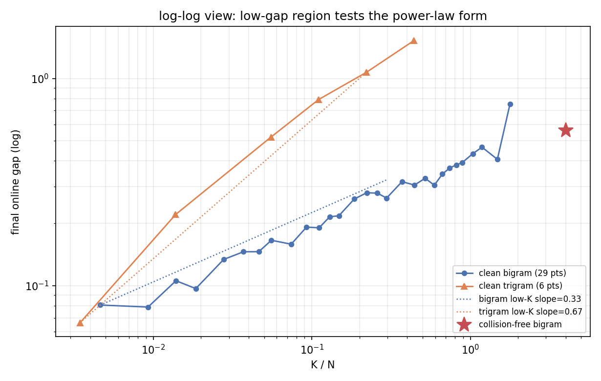
wave-2 发现：
_curve 后缀）：
64K gap 轨迹平（<0.1）但瞬时跳变幅度与其他曲线相当（@337 −0.107）；4M 与 perfect 前
2 epoch 重合，epoch 3 perfect 拉开——零碰撞优势主要在 replay 后期的积累阶段。产物：figs/fig_clean_gap_vs_KN.png（semilog 29+6 点）、
figs/fig_clean_gap_vs_KN_loglog.png、figs/fig_clean_forking.png；
分析脚本 tasks/s1_scaling_three_axis/analysis/plot_clean_figures.py；
launcher tasks/s1_scaling_three_axis/launchers/run_clean_table_grid.sh 与
run_clean_table_dense2.sh；每档 table_occupancy.json 在对应
ctbl_*_fixed 目录。
详细登记见 docs/experiment-log.md §22 / §22b。后续（已按用户拍板收缩）：
clean 版 trigram 加密、clean 版 both module、clean 版 row-level；seed 43/44 仲裁不做。
frequency 轴使用 L4 + 1M table 的
freq_{bigram,trigram,both,nogram}_{fs,fe}_fixed。历史最终 fixed-step
frequency 图取 step 1000 的 freq_{module}_fs_fixed/exact_freq_loss.jsonl；
满足 token_count >= 1024 且 distinct_contexts >= 32 的 train/val
共同 exact-f 值才进入 marginal gap。novel 和没有 train loss 的 bucket
不定义 gap，也不进入 log-fit。
freq_gap_bigram_final.png 和 freq_gap_trigram_final.png 显示：在 seed 42
的 L4 fixed-step 截面中，bigram 与 trigram branch 的 gap 通常随 exact
frequency 增大而下降；nogram 大多围绕零附近波动。高频端的点更噪，不能
把局部反弹写成单调性破坏或新的机制。
canonical 图使用从 eligible per-f 条目直接构造的 8 个等计数 log-f bins：
每个点的横坐标是 bin 内 exact-f 的几何中点，横向误差棒表示该 bin 的
[f_min, f_max] 范围，纵向误差棒是按 token 数加权后的 pooled SEM。
freq_gap_bigram_final_raw.png 和 freq_gap_trigram_final_raw.png 保留全部
eligible per-f 点及其 SEM，作为用户要求的 debug 原图；它们故意较为拥挤，
不作为主展示图。
分析脚本对 L4 fixed-step 的 bigram/trigram module 做 token-marginal
raw-space fit：
G(f) = A f^(-β) [1 − exp(−c f^γ)]。
| branch | module run | A | β | c | γ | eligible f | positive-fit f |
|---|---|---|---|---|---|---|---|
| bigram | freq_bigram_fs_fixed |
7.594 | 0.752 | 1.394 | 0.755 | 63 | 62 |
| bigram | freq_trigram_fs_fixed |
1.560 | 0.126 | 2.293 | 0.776 | 63 | 63 |
| trigram | freq_bigram_fs_fixed |
1.147 | 0.544 | 1.980 | ~0 | 57 | 51 |
| trigram | freq_trigram_fs_fixed |
1.922 | 0.560 | 0.709 | 0.748 | 57 | 54 |
完整参数、标准误以及每个被排除的 exact-f 和原因记录在
figs/fit_manifest.json。拟合只保留 positive gap；不满足 train/val
token/context 纳入门槛的频率也被逐项记录。trigram branch 的
freq_bigram_fs_fixed 拟合出现 γ≈0 且参数标准误很大，说明单 seed /
当前覆盖下可辨识性不足。因此这些数字只能作为形状的 exploratory summary，
不能作为稳定的 A, β, c, γ 估计，也不能替代计划中的 epoch 截面、
profile-likelihood 和 seed 43/44。
以下全部基于 online gap 主口径（val_loss − train_loss，train_log.jsonl），
三 seed（42/43/44）汇总。跨 seed 变异度用 cv = std/mean 表示；
结论强度按 plan-5 约定标注为 seed-stable / seed-sensitive /
identifiability-limited / not yet causal。
ΔG = G(module) − G(no-ngram)（online final gap）在全部
24/24 个 (L × module × 对齐) 组合 × 3 seed 中均为正，方向 seed-stable。
fixed-step（1000 步，ΔG，三 seed）：
| L | bigram | trigram | both |
|---|---|---|---|
| L1 | +4.99 / +2.14 / +1.50 | +1.37 / +1.11 / +1.43 | +10.72 / +2.67 / +11.03 |
| L2 | +2.27 / +1.54 / +1.60 | +1.13 / +4.02 / +4.72 | +6.14 / +4.04 / +6.73 |
| L3 | +1.60 / +1.05 / +1.03 | +1.64 / +1.63 / +2.38 | +2.10 / +2.59 / +5.24 |
| L4 | +0.95 / +0.44 / +0.41 | +0.88 / +1.78 / +0.94 | +0.98 / +1.00 / +2.22 |
fixed-epoch（6 epoch，ΔG，三 seed）：
| L | bigram | trigram | both |
|---|---|---|---|
| L1 | +0.55 / +0.81 / +0.60 | +0.42 / +0.66 / +0.87 | +0.95 / +1.73 / +1.88 |
| L2 | +1.13 / +1.03 / +1.07 | +0.81 / +0.63 / +0.86 | +1.83 / +2.18 / +2.14 |
| L3 | +1.81 / +1.02 / +1.00 | +2.21 / +2.19 / +2.64 | +5.89 / +4.65 / +4.09 |
| L4 | +0.98 / +2.00 / +0.87 | +5.90 / +5.72 / +5.56 | +2.08 / +5.45 / +5.47 |
not yet causal）。图：figs/epoch_deltaG_fs_multiseed.png（逐 seed 点 + 均值）；汇总表
figs/epoch_final_gap.csv（96 行，三 seed）。
table 轴三 seed（12 个公共 mult × 3 module，online final gap @1000）：
trigram（seed-stable，单调）：
| mult | s42 | s43 | s44 | cv |
|---|---|---|---|---|
| 1 | 0.069 | 0.052 | 0.072 | 14% |
| 4 | 0.172 | 0.155 | 0.123 | 13% |
| 8 | 0.272 | 0.251 | 0.217 | 9% |
| 16 | 0.357 | 0.372 | 0.361 | 2% |
| 24 | 0.496 | 0.517 | 0.547 | 4% |
| 32 | 0.717 | 0.665 | 0.661 | 4% |
| 48 | 0.878 | 0.734 | 0.857 | 8% |
| 64 | 0.861 | 0.849 | 1.021 | 9% |
bigram：mult 8–32 稳（cv 2–13%），但 mult=6/24/48/64 个别点 cv 25–48% （seed-sensitive 点）；总体随 mult 上升但无干净幂律。
both（不可定量）：mult≥16 后 cv 普遍 24–45%（如 mult=32：0.698/1.595/0.748； mult=48：2.244/0.860/1.028）。双表干涉导致 both 在大表区不可定量， 不能合并进单一幂律公式（见 §6.4）。
图：figs/table_gap_vs_2R.png（双对数）/ figs/table_gap_vs_collision.png
/ 交互版 .html；汇总 figs/table_summary.csv（141 行，三 seed）。
对 L4 + 1M 锚点的 freq_{module}_fs[_s{43,44}]_fixed（step 1000 截面，
token-marginal）做 raw-space 拟合
G(f) = A·f^(−β)·[1 − exp(−c·f^γ)]，三 seed 参数 cv：
| branch / module | β（mean±sd） | γ | A | c |
|---|---|---|---|---|
| bigram/bigram | 0.713±0.029（cv 4%） | cv 11% | cv 35% | cv 6% |
| bigram/trigram | 0.128±0.005（cv 4%） | cv 7% | cv 33% | cv 6% |
| trigram/bigram | 0.483±0.044（cv 9%） | cv 141% | cv 38% | cv 91% |
| trigram/trigram | 0.673±0.088（cv 13%） | cv 6% | cv 64% | cv 39% |
identifiability-limited，不写绝对值。
完整参数、标准误与逐 f 排除原因见 figs/fit_manifest.json（12 个拟合）。epoch 网格（相对各 L no-ngram 的 ΔG）上的交互项
I = ΔG_both − ΔG_bigram − ΔG_trigram：
table 网格上的交互（raw gap，无 nogram 对照）： mult≤40 时 I 普遍为小幅负值（亚可加，−0.03~−0.56），三 seed 同号； mult≥48 时 I 跨 seed 剧烈变号（mult=48：+0.92/−0.27/−0.90）—— 大表区双表干涉 seed-sensitive。
结论：模块交互 I 显著非零且方向/幅度随 seed、对齐方式、表大小变化，
因此 不允许把 bigram+trigram 合并成单一公式解释；both 臂只作对照，
不进任何合并 scaling 定律。
| 猜想 | 判定 | 依据 |
|---|---|---|
| H1 两因素频率律 | β seed-stable（cv 4–13%）；A/c/γ identifiability-limited | §6.3，三 seed 12 个拟合 |
| H2 epoch 对齐律 | 方向 seed-stable（24/24 同号）；幅度 fixed-step seed-sensitive、fixed-epoch 稳 | §6.1 |
| H3 table saturation | 有限窗口上升；饱和与全区间幂律均未解析；both 大表区不可定量 | §6.2 |
| H4 模块交互 | 显著且 seed-sensitive，不允许合并单公式 | §6.4 |
以上全部为 observational 证据；epoch/table 的方向性结论已满足
"三 seed 同号才写方向稳定"的登记标准，但不升级为因果 claim
（not yet causal）。
本附录新增的关系图不把几条曲线简单叠在一起，而是按同一条证据链组织：
table size (2R) ──┐
collision state ──┼──> table-induced online gap
exposure (L) ────┤
frequency (f) ───┘
图中的每个箭头都对应一个可测关系，不代表已经证明因果机制。变量和图的 对应关系如下：
| 关系 | 图 | 坐标与可见内容 | 读图目的 |
|---|---|---|---|
2R → gap |
figs/rel_gap_vs_2R_multiseed.png |
横纵轴均为 log；颜色区分 module，marker 区分 seed；虚线为每组的 log-log guide | 看 table 容量增加是否伴随 gap 上升、是否出现饱和 |
1−collision → gap |
figs/rel_gap_vs_physical.png |
横纵轴均为 log；collision 来自 bigram layer-0 hash-0 的 occupancy 统计 | 把逻辑地址关系投影到实际 hash 碰撞状态 |
L → ΔG |
figs/rel_deltaG_vs_epoch.png |
左 fixed-step，右 fixed-epoch；ΔG = G(module)−G(nogram)；线性 y 轴保留零线 |
区分计算步数对齐和 replay/epoch 对齐 |
f → gap(f) |
figs/rel_gap_vs_frequency_bigram.png、figs/rel_gap_vs_frequency_trigram.png |
横纵轴均为 log；fs/fe 并列；带 error bar 与 two-factor guide | 看 exact frequency 的衰减形状及其对齐依赖 |
E × f → gap(f) |
figs/rel_gap_vs_frequency_epoch_bigram.png、figs/rel_gap_vs_frequency_epoch_trigram.png |
fixed-epoch 的 epoch 1/3/6 三截面；每个截面含三 seed、bin 内 SEM、拟合 guide | 检查频率关系随 exposure 是否改变 |
| 四轴总览 | figs/rel_relationship_map.png |
(a) table，(b) collision，(c) fixed-epoch exposure，(d) trigram frequency |
作为报告的关系地图，不替代逐图检查 |
频率图不是把旧的粗 bin 再切细，而是直接读取
exact_freq_loss.jsonl 的 exact context frequency。对每个 branch/module/seed/
alignment，处理步骤为：
f=0（novel）；它没有 train token loss，不能定义 gap；gap(f) = mean_val_loss(f) − mean_train_loss(f)；gap(f)>0 的点；log(f) 排序，等数量切成最多 8 个 bin；exp(mean(log f)) 的 geometric midpoint；SEM = std(gap(f))/sqrt(n_bin)，表示bin 内异质性诊断，不是独立
seed 的置信区间。因此，带 error bar 的图适合判断频率关系是否被少数 noisy frequency
支配；它不能被解释成每个频率点的重复实验置信区间。*_final_raw.png
保留所有 eligible per-f 点、含 SEM 的拥挤 debug 图，便于检查分 bin 是否
掩盖了结构。所有频率图都明确标注 fs（1000 steps）或 fe（6 epochs，
2022 steps），不混用两个截面。rel_gap_vs_frequency_epoch_{branch}.png 进一步
使用 fe 的 epoch 1（约 337 steps）、epoch 3（约 1012 steps）和 epoch 6
（2022 steps）三个 exact-freq 截面；对应的 54 条成功拟合记录（branch ×
module × seed × snapshot；少数低频截面因正 gap/样本门槛不足被排除）写入
figs/frequency_snapshot_fit.csv。
rel_gap_vs_2R_multiseed.png 是主 table 图：横轴是每个 n-gram、每层的
logical addresses 2R = 16384 × table_mult，纵轴是最终 online gap。
双对数坐标只显示正 gap；负值或零值不被隐式替换。每个 module 有三种
marker（circle/square/triangle = seed 42/43/44），颜色固定为
bigram/trigram/both。
collision 图使用 1−collision_rate 而不是 collision rate 本身，因为
collision rate 接近 1，直接画会压缩所有点。occupancy 没有作为独立主图：
在 mult 1–8 时 occupancy 已接近 1，继续使用 log occupancy 会制造几乎
垂直的伪关系；它仍保存在 table_summary.csv 中用于审计。该选择是为了
避免把一个已饱和的诊断量误写成解释变量。
静态 PNG 保留完整三 seed 与三个 module，方便审稿/归档；同一目录中的
Plotly HTML（rel_gap_vs_2R_multiseed.html、rel_gap_vs_frequency_multiseed.html）
仍可通过图例隐藏曲线，并用按钮独立切换 x/y 轴为 log 或 linear。原有
table_gap_vs_2R.html、table_gap_vs_collision.html 继续保留。关系图脚本在
§8 的统一重建命令中调用。它只读取 data/runs_scaling/*_fixed/，不会修改
训练产物。重新生成后，先
检查 PNG，再执行 git diff --check；原始 per-f debug 图不作为主报告结论。
从仓库根目录重建当前三轴结果：
.venv/bin/python tasks/s1_scaling_three_axis/analysis/analyze_scaling_epoch.py \
data/runs_scaling
.venv/bin/python tasks/s1_scaling_three_axis/analysis/analyze_scaling_table.py \
data/runs_scaling
.venv/bin/python tasks/s1_scaling_three_axis/analysis/analyze_scaling_frequency.py \
data/runs_scaling
.venv/bin/python docs/plot_scripts/gen_s1_relationship_figs.py
当前已完成的是旧 compile 波次的 seed 42/43/44 数据归档、测量审计、
三轴图和探索性数学摘要；这些产物不构成当前 no-compile 标准下的完成证明。
仍待完成 no-compile 标准的基础 QC、三轴重跑、跨 seed profile-likelihood，
以及将三轴结果提升为主报告的最终 scaling claim；在这些完成前，不更新
docs/report/index.html 的主线结论。
以下产物由 docs/plot_scripts/gen_s1_relationship_figs.py 生成，均只读取
data/runs_scaling/*_fixed/：
| 产物 | 内容 |
|---|---|
figs/rel_relationship_map.png |
四轴总览：table、collision、exposure、frequency |
figs/rel_gap_vs_2R_multiseed.png / .html |
logical addresses → gap；静态双对数 + 可切换轴的交互版 |
figs/rel_gap_vs_physical.png |
module-matched collision complement → gap |
figs/rel_deltaG_vs_epoch.png |
fixed-step / fixed-epoch 的 exposure → ΔG |
figs/rel_gap_vs_frequency_{bigram,trigram}.png |
final fs/fe frequency → gap，带 bin 内 SEM |
figs/rel_gap_vs_frequency_epoch_{bigram,trigram}.png |
fe 的 epoch 1/3/6 frequency → gap |
figs/rel_gap_vs_frequency_multiseed.html |
可隐藏 branch/module/seed、可切换 log/linear 轴 |
figs/frequency_snapshot_fit.csv |
54 条 epoch 1/3/6 成功拟合记录 |
figs/epoch3000_deltaG_both_minus_nogram.png 是已有的独立 3000-step 诊断图，
静态图遵循 warm paper 调色板；颜色表示 module，marker 表示 seed。静态图中的 log 轴只显示正 gap；可隐藏曲线、切换坐标轴的版本见交互图。

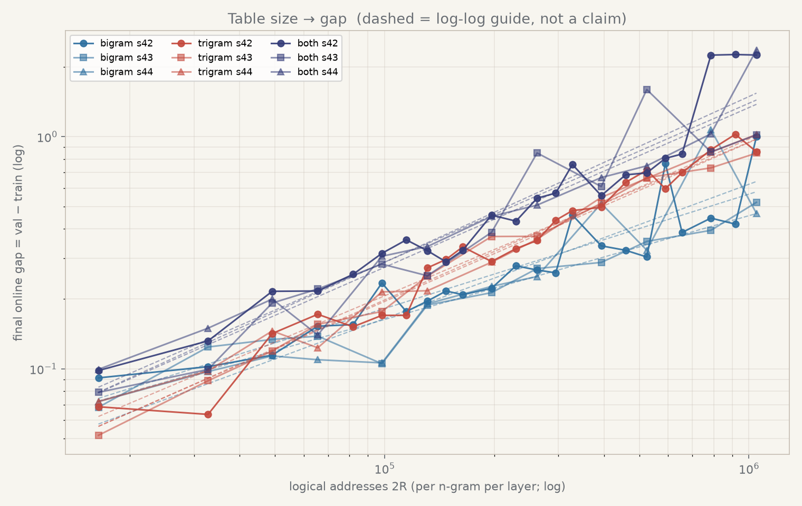
打开交互版 table 图（可隐藏 module/seed、切换 x/y 对数轴）
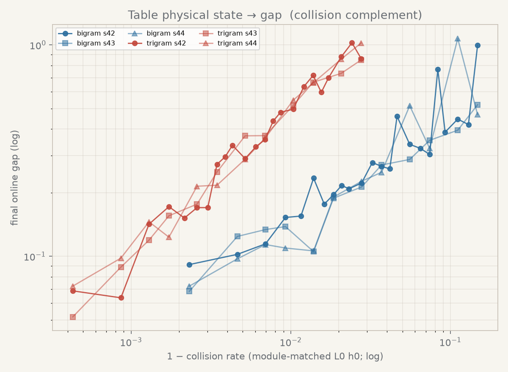
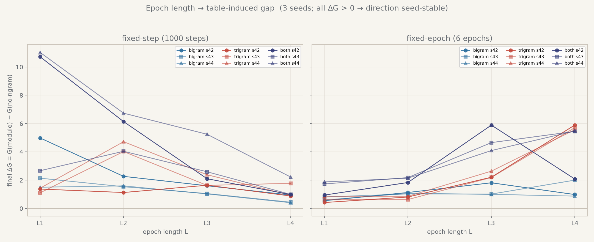
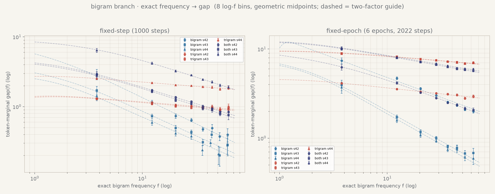
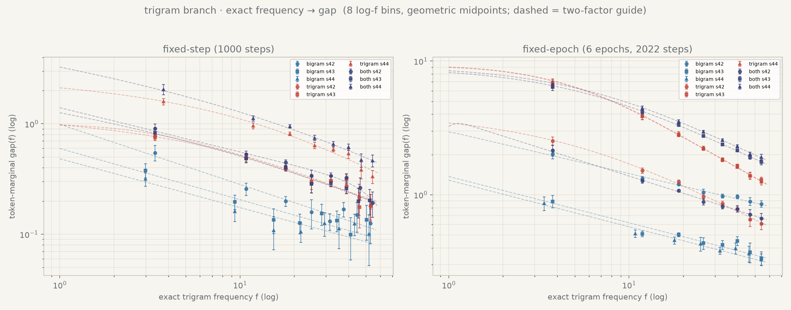
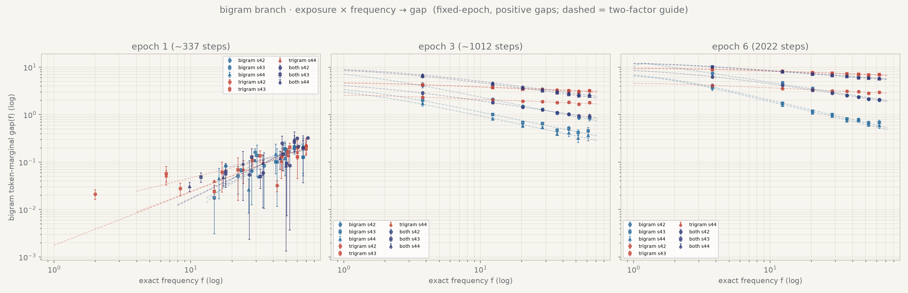
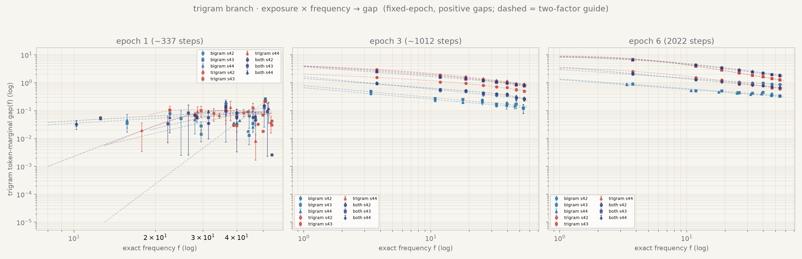
打开交互版 frequency 图（可隐藏 branch/module/seed、切换 x/y 对数轴）
Debug 原图：bigram raw per-f · trigram raw per-f。这些图保留所有 eligible per-f 点和 SEM，故较拥挤，不作为主结论图。
{kind=link}
{kind=link}